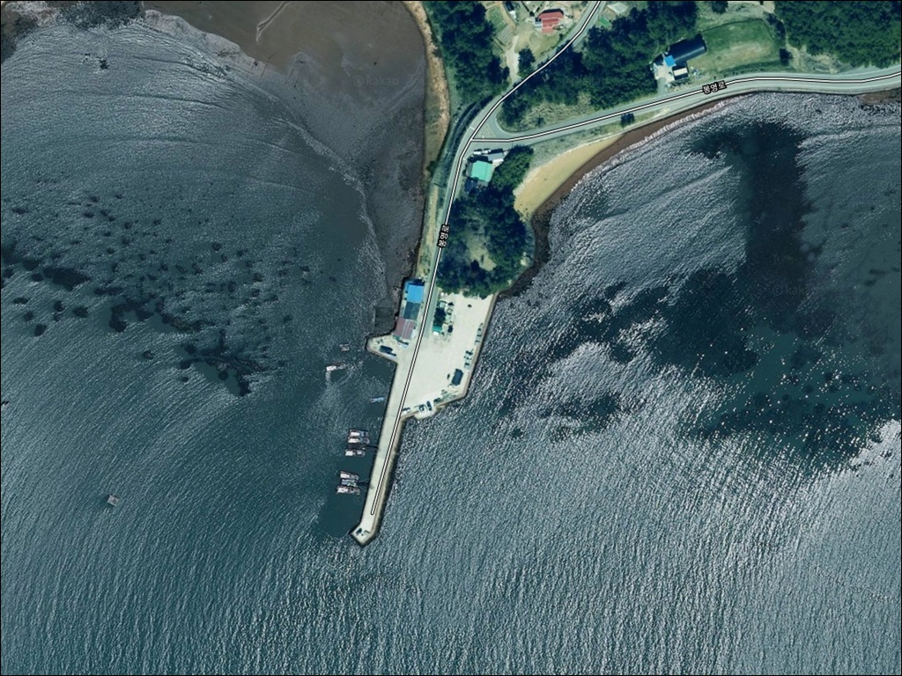
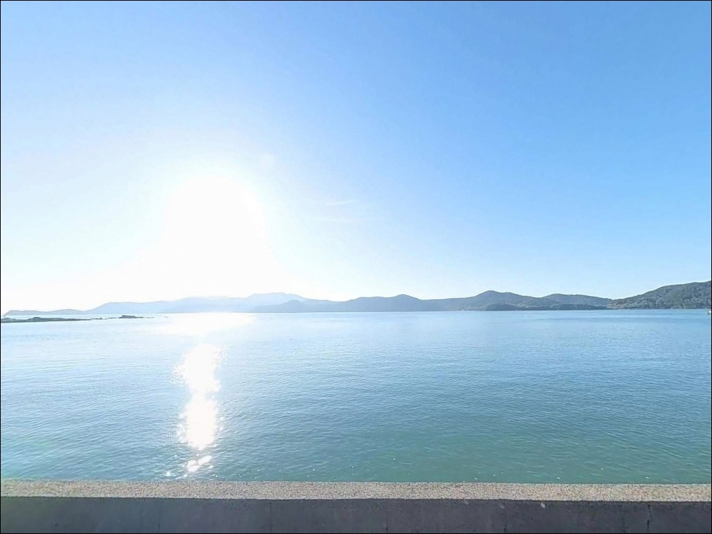
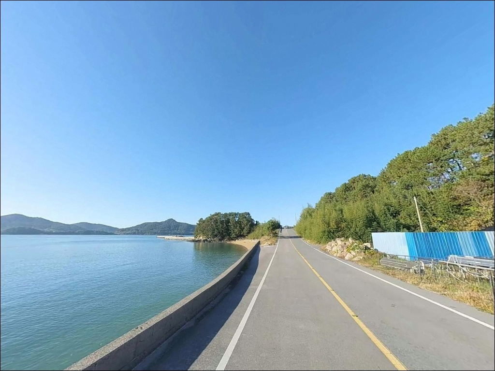
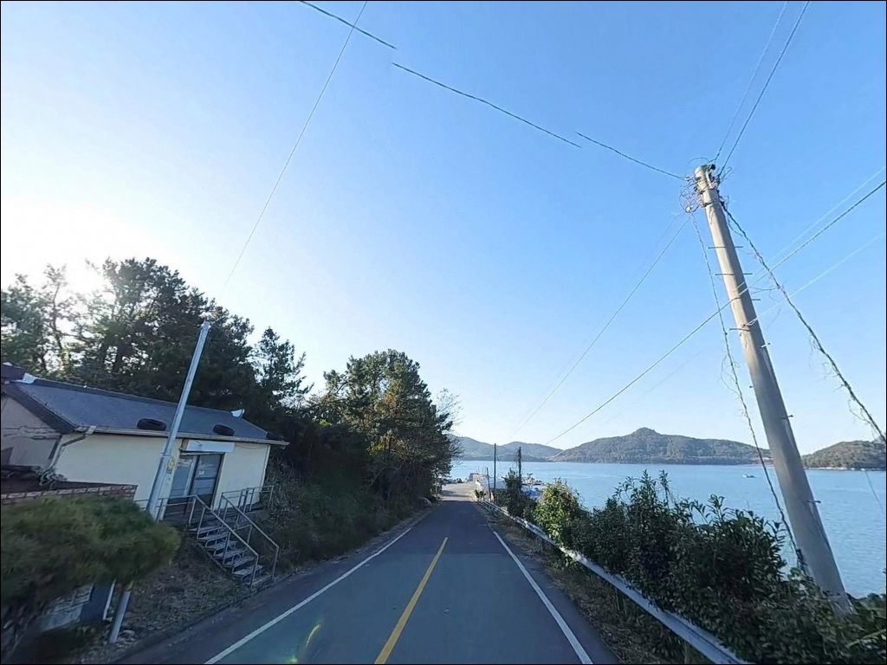
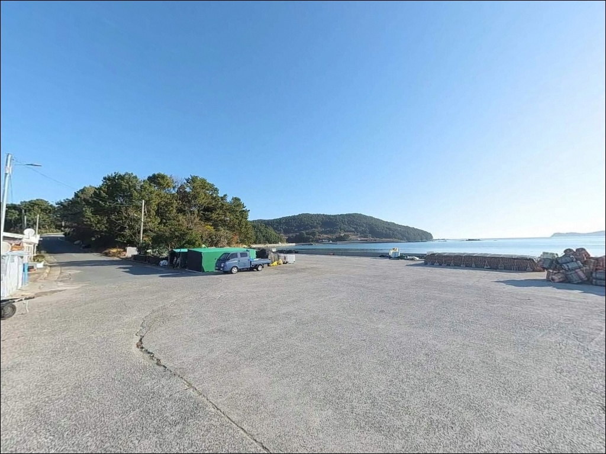
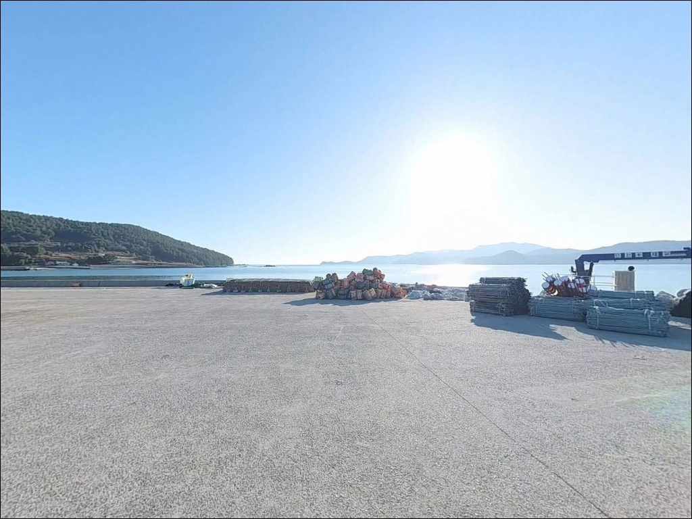
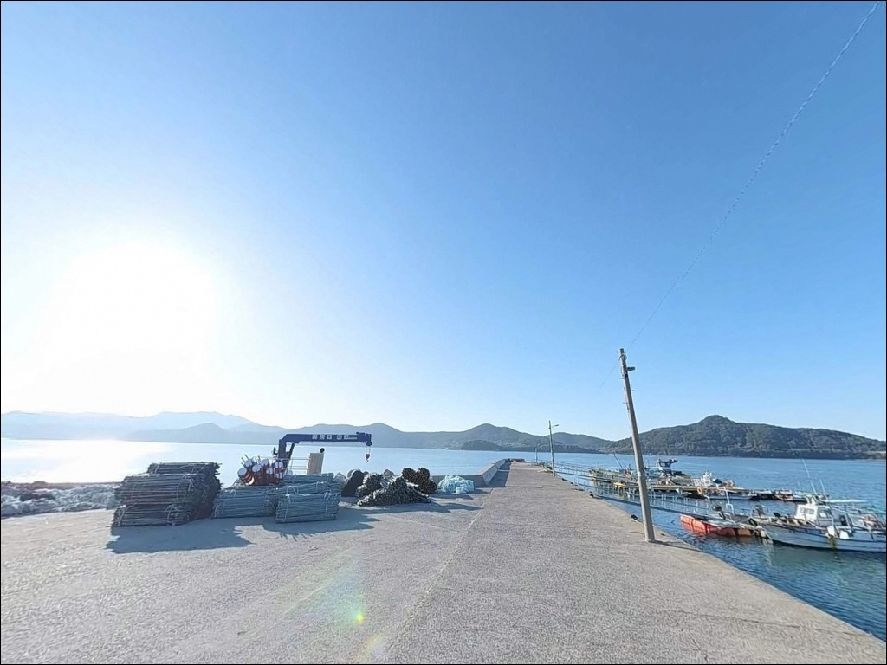
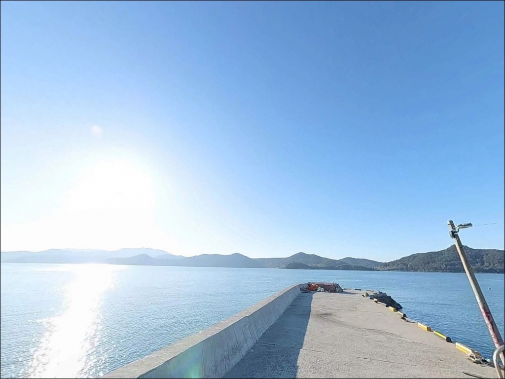
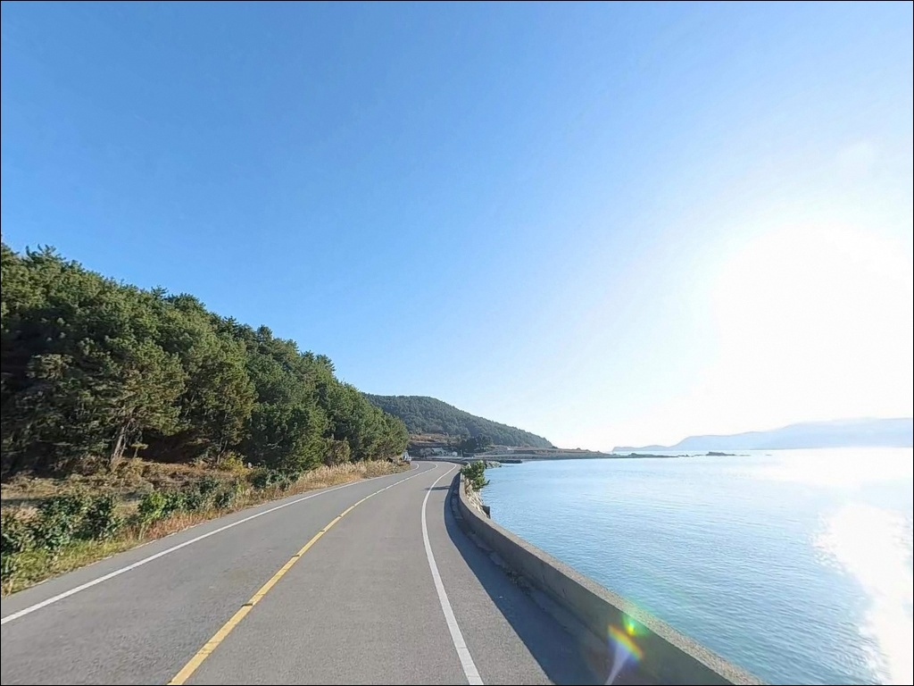

조류에 채비 떠내려갈 때, 수심 8m 소영선착장 갑오징어 에깅 물때
이 페이지에는 광고(제휴 링크 포함)가 있으며, 광고 링크를 통해 구매하면 운영자가 판매 수익 또는 수수료를 받을 수 있습니다. 포인트 사진: 카카오맵 스카이뷰·로드뷰. 이 페이지의 지도·사진 이미지는 카카오맵의 실제 서비스 이미지와 다를 수 있습니다.


포인트 안내
물때 확인 없이 나로도 물골 선착장에 진입하면
사리 전후 조류가 너무 강해
어떤 채비를 써도 컨트롤이 불가능해집니다.
소영선착장은 두 섬 사이 물골이
조류를 집중시키는 구조로,
타이밍 판단이 조과의 전부를 결정하는
포인트입니다.
전남 고흥군 동일면 봉영리,
내나로도 남쪽에 자리한 소영선착장은
외나로도와 마주보는 위치에서
두 섬 사이 물골을 품은 형태입니다.
수심이 깊고 암초 지형이 발달한 이곳은
낚시춘추 전문지에 나로도 갑오징어 포인트로
이름을 올린 검증된 스팟입니다.
이 글은
소영선착장의
진입 동선, 차박 여건, 물때 판단 기준,
낚시 스타일별 공략 조건에 집중합니다.
조황 단정이나 특정 어종 보장은
이 글의 범위에 포함되지 않습니다.

1. 진입 동선과 포인트 접근성
내나로도는 나로1대교로 육지와 연결되어 있어
차량 진입 자체에 큰 어려움은 없습니다.
다만 섬 내부는 100~200m 산지 비율이 높고
평지가 적은 지형이라,
봉영리 남단까지 이어지는 해안 도로는
폭이 좁고 경사 구간이 포함된
농어촌 수준의 마을도로입니다.
대형 SUV나 캠핑 장비를 갖춘 차량이라면
출발 전에 위성지도로 진입로를
반드시 확인하고 가는 편이 안전합니다.
회차 공간도 넉넉하지 않으므로
후진 진출이 어려운 차량은
갓길 여건도 함께 살펴야 합니다.
주차는 선착장 접안면 옆 공터를
활용하는 방식이 일반적입니다.
소형 마을 선착장 구조상 1~2대 수용이
가능한 수준이며,
어선 이동 동선을 막지 않는 자리가
우선입니다.

2. 차박 환경과 야간 체류 여건
봉영리는 인구가 적은 소규모 어촌 마을입니다.
야간에는 차량 통행이 거의 없는 편이며,
민가 밀집도가 낮아
프라이버시는 상대적으로 양호한 환경입니다.
다만 가로등 수가 많지 않을 가능성이 있어
개인 조명 장비는 필수입니다.
두 섬 사이 물골 구조상 조류가 강한 편이고,
기상에 따라 바람 영향을 받는 경우도 있습니다.
낚시를 마치고 조용히 하룻밤 머무는 용도로는
나쁘지 않지만, 주차 공간이 좁아
차박을 메인으로 삼기에는
공간 확보 여부를 사전에 확인해야 합니다.
봉영리 남단은 다도해해상국립공원
나로도지구 경계와 겹칠 가능성이 있습니다.
국립공원 구역 내 지정 외 장소에서는
야영·취사가 원칙적으로 허용되지 않으므로,
출발 전 관할 기관 확인이 먼저입니다.


3. 주변 편의시설 및 인프라 현황
소영선착장 반경 3km 이내에는
편의점이나 식당을 기대하기 어렵습니다.
봉영리 남단의 소규모 어촌 마을 특성상
완전 자급 체제로 진입하는 것이
현실적인 준비 방식입니다.
식수, 얼음, 낚시 소품, 연료 모두
출발 전에 갖춰야 합니다.
반경 10km권으로 이동하면
나로2대교를 건너 외나로도 방향의
나로도항 일대에 닿을 수 있습니다.
나로도마트와 나로도수협 등
기본 생활 인프라를 이용할 수 있어,
부족한 소품이 있다면
이 동선을 활용하는 편이 효율적입니다.
응급 상황 발생 시 고흥읍까지 거리가
상당하므로 출발 전
연료·비상약품·수분 준비는 철저히
갖추는 것이 기본입니다.

4. 진입 전 반드시 챙겨야 할 준비사항
소영선착장 방문 전에 가장 먼저 확인할 것은
물때입니다.
나로도 일대는 조류가 빠르기로 알려진 지역으로,
사리 전후에는 채비 컨트롤이 불가능해질 만큼
조류가 세집니다.
바다타임에서 봉영리 기준 물때를 확인하고
조금 전후 또는 만조 전후를 노려
출발 시각을 맞추는 것이 기본 전략입니다.
섬 지역 특성상 기상 변화가 빠르므로
기상청 예보를 당일 아침 다시 한번 확인하는 것이
포인트 낭비를 막는 조건입니다.
암초지대 특성상 채비 손실이 잦으니
여분 채비는 넉넉하게 준비하는 편이 좋습니다.
마을 선착장이라 어선 조업이 이루어지는 공간입니다.
어선 이동 동선과 어구에 접촉하지 않도록
자리를 잡는 것이 기본 매너이며,
야간에는 헤드랜턴과 구명조끼를
반드시 챙겨야 합니다.

5. 지형 기반 낚시 여건 분석
소영선착장의 핵심은 내나로도와 외나로도 사이에
형성된 물골입니다.
이 물골 구조가 수심 8m 안팎의 깊은 지형과
꾸준한 조류 흐름을 동시에 만들어냅니다.
선착장 주변에는 수중 암초가 곳곳에 분포하고 있어
어류의 은신처와 먹이 활동 구간이
자연스럽게 갖춰져 있습니다.
바닥은 잔돌이 깔린 암초지대로
선착장에서 가까운 곳은 밑걸림이 심한 편입니다.
채비를 멀리 던진 뒤 먼 곳에서
입질을 기다리는 방식이 이 포인트에 맞고,
선착장 좌우 암초 경계선도
탐색해볼 만한 구간입니다.
물골이 만드는 조류 흐름은
회유성 어종이 지나는 길목 역할을 합니다.
다만 사리 전후에는 어떤 채비를 써도
흐름을 버티기 어려운 수준까지 세집니다.
정조 타이밍을 먼저 계산하고 입장하는 것이
이 포인트를 제대로 공략하는 방법입니다.
최신 조황은 가기 전에 꼭 검색해 보시기 바랍니다.


6. 포인트에 어울리는 낚시 스타일
이 포인트에서 가장 잘 맞는 낚시는
갑오징어 에깅입니다.
수심 8m의 물골, 암초 지형, 꾸준한 조류 흐름은
에깅 채비가 충분히 힘을 발휘할 수 있는
구조 조건을 갖추고 있습니다.
봄부터 12월까지 시즌 폭이 넓은 편이라
연중 공략이 가능한 스타일입니다.
볼락 라이트게임도 노려볼 만합니다.
암초대 주변은 볼락이 서식하기 좋은
지형 조건을 갖추고 있으며,
11월 이후 씨알이 올라오는 경향이 있습니다.
야간에 소형 지그헤드 채비로
선착장 주변 암초 경계를 천천히 탐색하는
방식이 어울립니다.
원투낚시도 이 포인트 구조에 잘 맞는 스타일입니다.
수심이 일정하고 조류가 흐르는 물골 구간은
바닥 어종을 노리기에 적합한 조건입니다.
조류가 느려지는 정조 타이밍에
채비를 멀리 보내
바닥을 탐색하는 방식이 유효합니다.

7. 대안 포인트와 플랜 B 동선
소영선착장 조류가 너무 강하거나
주차 여건이 여의치 않을 때는
나로2대교 아래가 첫 번째 대안입니다.
내나로도와 외나로도 사이 물골을 끼고 있어
조류 흐름이 잘 살아 있는 루어낚시 지점이며,
만조나 간조 전후 타이밍에 집중하면
조과를 기대해볼 수 있습니다.
나로2대교를 건너 외나로도 방면으로 이동하면
나로도항이 있습니다.
수심 10m 안팎으로 깊고 일정하며
진입과 주차 여건이 안정적입니다.
소영선착장을 처음 찾는다면
나로도항을 기점으로 잡고
소영선착장을 병행 탐색하는 동선이
효율적입니다.
외나로도 남서쪽의 염포방파제는
감성돔과 갑오징어 포인트로 알려진 곳입니다.
에깅 시즌에 함께 묶어서
돌아보기 좋은 대안 포인트입니다.

물골 조류를 이해하면
소영선착장이 달라 보입니다
갑오징어 에깅이나 볼락 라이트게임을
즐기는 낚시인이라면
소영선착장의 지형 조건은
잘 맞는 구조입니다.
수심 있는 물골과 암초 지형이
복합 공략을 가능하게 하고,
온라인 정보가 많지 않아
직접 발품을 팔아야 하는 탐험형 포인트이기도 합니다.
반면 진입로 사전 확인 없이 찾아가거나,
물때 계산 없이 사리 전후에 도착하면
낚시 자체가 불가능해지는 상황을
맞닥뜨릴 수 있습니다.
물때 확인, 자급 준비, 진입로 점검,
이 세 가지를 갖추고 간다면
기억에 남는 포인트가 될 수 있는 곳입니다.
편의시설 없는 조용한 어촌 마을에서
물골 조류 옆에 자리를 깔고 하룻밤 머무는 차박 여행자라면,
국립공원 야영 가능 여부만 미리 확인해두면
낚시와 차박을 동시에 즐기기 좋은
출조가 될 수 있습니다.